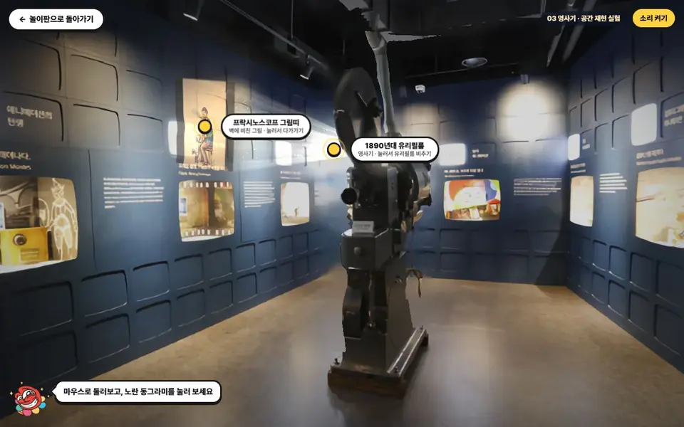
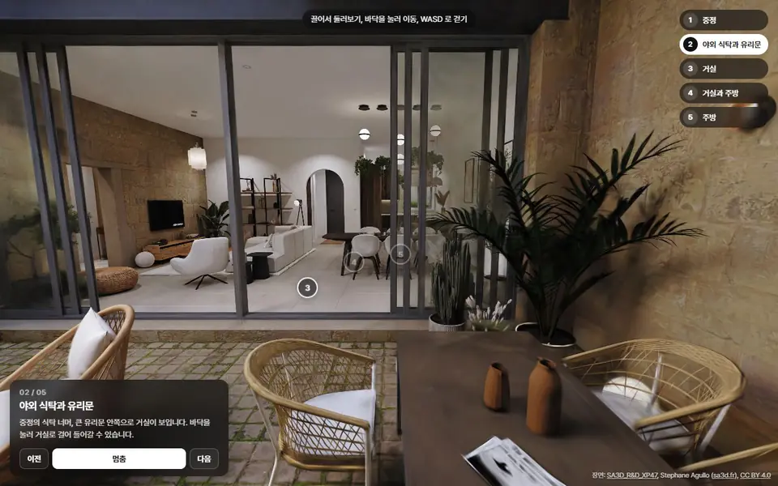

지금 실험은 누리집 사진 한 장(가로 600픽셀)에 AI로 깊이만 입힌 것입니다. 사진에는 카메라 쪽에서 보이는 면만 있습니다. 영사기 뒤, 옆벽, 발밑은 처음부터 정보가 없어서 조금만 돌아도 늘어나거나 비어 보입니다. 그래서 움직일 수 있는 폭을 일부러 좁혀 두었고, 그게 '구현되다 만' 느낌입니다.
사진 한 장카메라 쪽 면만 찍힙니다. 영사기 뒤(빨간 칸)와 옆벽은 정보가 없습니다.폰으로 돌며 찍기여러 자리(검은 점)에서 찍어 모든 쪽이 채워집니다.

지금 실험: 사진 한 장, 정면 근처에서만 움직임

우리 투어 도구 본보기: 스플랫, 방 사이를 걸어 다님 (공개 장면 SA3D, CC BY 4.0. 실제 촬영인지 CG인지는 확인 못 함)
공간을 옮기는 방법 7가지
1. 사진 한 장 + AI 깊이 지금 실험
필요한 것
누리집 사진
실감
정면에서만. 옆·뒤가 없음
걸어 다니기
못 함, 살짝 기울기만
맛보기용
2. 폰 촬영 → 가우시안 스플랫 권장
필요한 것
폰 하나 + 무료 앱, 또는 우리 사무실 PC로 학습
실감
사진 그대로. 조명·반사·질감까지
걸어 다니기
찍은 범위 안에서 자유롭게
약점
무늬 없는 흰 벽·유리 진열장은 뭉개질 수 있음. 안 찍은 곳(문 너머)은 흐림
실사로 걷는 박물관에 맞는 방법
3. 폰 사진 → 사진측량(3D 모형)
필요한 것
폰 + RealityScan 같은 앱
실감
모양은 잡히지만 질감이 떡지고 흰 벽·유리에 구멍
걸어 다니기
충돌·게임 만들기는 쉬움
영사기 같은 물건 하나 스캔에 좋음
4. 아이폰 프로 라이다 스캔
필요한 것
아이폰 프로·아이패드 프로(갤럭시는 라이다 없음)
실감
크기·모양은 정확, 사진감은 보통
걸어 다니기
쉬움
2번과 함께 쓰면 흰 벽에 강해짐
5. 360 파노라마 투어
필요한 것
360 카메라(폰 파노라마는 이음새가 보임)
실감
사진 그대로
걸어 다니기
점에서 점으로 순간이동만
박물관 누리집 2층 가상 전시관(매터포트)이 이 방식. 라바와 걷는 게임 느낌은 못 냄
6. AI가 공간을 지어내기
필요한 것
사진 몇 장 + 유료 서비스(World Labs Marble 등)
실감
그럴듯하지만 실제에 없는 것을 지어냄
걸어 다니기
됨
박물관 기록용으로는 부적합, 콘셉트 그림용
7. 직접 3D 모델링 국중박 시험 방식
필요한 것
사람 손, 방 하나에 며칠
실감
그림 같은 느낌, 실사 아님
걸어 다니기
가장 가볍고 자유로움
실사가 필요 없을 때
권장 순서: 폰 촬영 → 스플랫 → 우리 투어 도구
촬영영사기 방 하나에 10분. 아래 가이드대로.
3D로 바꾸기앱(Scaniverse)이면 폰 안에서 끝나고 파일(SPZ)만 보내면 됩니다. 4K 영상으로 찍으면 우리 사무실 PC(RTX 3070)에서 무료 공개 도구로 더 선명하게 학습합니다.
걸어 다니게우리 투어 도구가 정류장, 바닥 눌러 걷기, 벽에 막힘, 자동 투어를 붙입니다.
박물관답게놀이판에서 만든 것을 얹습니다. 라바 안내, 작품 점을 누르면 그 벽에서 영상 재생, 부드럽게 따라오는 카메라.
공개폰으로 열리는 링크 하나로 드립니다. 방 하나 파일은 10~30MB 예상(본보기 아파트 66만 점이 8.4MB).
공개된 실내 스플랫 중 잘 나온 것들을 골라 실제로 열리는지 확인했습니다. 촬영 기기가 페이지에 적힌 것만 기기 이름을 썼습니다.
아이폰 촬영 앱 서비스(Teleport)에 올라온 실내
Teleport는 아이폰으로 찍어 클라우드에서 3D로 만드는 서비스입니다. 다만 다른 카메라 사진도 올릴 수 있고, 장면마다 기기 표시는 없습니다. 점이 수백만 개라 처음 뜨는 데 오래 걸립니다(디자인 갤러리는 PC에서 20초 넘게, 50초 안에 떴음). 폰은 와이파이에서 여세요.
공개된 최고 품질 실내는 대부분 폰이 아니라 360 카메라·액션캠·미러리스로 찍었습니다. 기기 확인된 5곳이 전부 그렇습니다.
이유는 폰의 자동 보정입니다. 폰은 장면마다 밝기·색·선명도를 AI로 알아서 바꿔서, 같은 벽이 사진마다 달라지고 3D가 흐려집니다.
그래서 폰으로 할 땐 '보정 끄고 고정'이 핵심입니다. 스플랫 전용 앱(Scaniverse·Teleport)은 앱이 이걸 맞춰 줍니다.
예시 장면들은 수백 MB~수 GB로 무겁습니다. 우리는 폰에서 바로 열리게 방 하나 10~30MB로 줄여 씁니다(점 수를 줄이는 대신 조금 덜 선명).
장비를 산다면 '비싼 장비'가 아니어도 됩니다. 박물관 예시의 360 카메라와 같은 계열인 인스타360 X5는 공식 스토어 65만~76만 원입니다(할인 시점마다 다름). 한 번에 사방을 찍어 촬영이 빠릅니다.
AI 보정은 어디까지 되나
촬영본 고르기
흔들리거나 흐린 프레임을 자동으로 빼고, 사진마다 다른 밝기를 맞춥니다. 위 킬 식물원 온실도 영상에서 선명한 프레임만 고르는 도구(Sharp Frames)를 썼습니다. 우리 PC에서 바로 할 수 있습니다.
학습 중 AI 깊이
무늬 없는 흰 벽·바닥이 울퉁불퉁해지지 않게 AI가 추정한 깊이를 함께 씁니다. 공개 도구로 가능합니다.
학습 뒤 AI 손질
엔비디아 Difix3D+(2025): 흐리거나 깨진 장면을 확산 AI가 고쳐 다시 3D에 반영합니다. 코드는 공개됐지만 연구·비상업용이라 고객 납품엔 그대로 못 씁니다.
AI로 빈 곳 채우기
안 찍은 곳을 AI가 지어냅니다(World Labs Marble 등). 실제와 다른 게 생겨 박물관 기록에는 주의가 필요합니다.
결론: AI 보정은 마지막 다듬기입니다. 품질 대부분은 촬영이 정합니다. 잘 찍은 폰 영상 + 우리 PC 학습이 가장 싸고 확실한 길입니다.
영사기 방 촬영 가이드
가장 쉬운 길: Scaniverse 앱
앱스토어·플레이스토어에서 Scaniverse 설치(기본 무료).
새 스캔 → 스플랫(Splat) 고르기.
처음 보여 줄 장면(입구에서 본 영사기)에서 시작해 아래 길을 따라 천천히 걷기.
한 번에 3분 안쪽. 길면 처리에 실패할 수 있다고 앱이 안내합니다. 방이 크면 두 번으로 나눕니다.
처리가 끝나면 내보내기 → SPZ(또는 PLY) 파일을 이 이슈에 첨부.
더 선명한 길: 4K 영상
기본 카메라, 1배 렌즈, 4K 60fps(안 되면 30fps). 줌 금지.
화면을 길게 눌러 노출·초점 고정. HDR은 끄고, 손떨림 보정은 되면 끕니다.
아래 길을 3~5분 동안 천천히(한 걸음에 2초).
영상 파일 원본을 이슈에 첨부(메신저로 보내면 화질이 깎입니다).
1벽을 따라 한 바퀴. 벽에서 1~1.5m 떨어져 진열 벽을 비스듬히 훑습니다.
2영사기 둘레 세 바퀴. 눈높이, 허리 높이, 머리 위(팔을 들고) 순서로.
3마지막에 모서리, 바닥과 벽이 만나는 곳, 진열장을 비스듬히.
↑입구에서 시작합니다. 처음 보여 줄 장면부터 찍습니다.
이렇게
관람객 없는 시간(휴관일·개관 전). 사람이 지나가면 그 부분을 다시 찍기.
조명은 그대로. 촬영 중에 불을 끄고 켜지 않기.
벽에 움직이는 영상이 나오면 끌 수 있으면 끄기(영상은 우리가 화면에서 다시 틀어 줍니다).
옆 장면과 많이 겹치게, 몸을 옮겨 가며 찍기.
이건 피하기
제자리에서 빙글 돌기. 파노라마처럼 서서 돌면 3D가 안 나옵니다. 걸어야 합니다.
빠르게 휘두르기, 줌, 플래시.
유리 진열장 정면에 바짝 붙기(반사가 뭉개짐).
일정·비용
촬영
영사기 방 10분. 9개 방 전부 반나절
3D로 바꾸기
앱이면 폰에서 10분 안팎. 영상이면 우리 PC에서 방마다 1~2시간(첫 회는 도구 설치 포함 반나절)
화면 만들기
첫 방 하루(정류장·작품 점·벽 영상·라바), 다음 방부터 반나절
비용
앱 기본 무료, 우리 PC 학습 도구 무료. 유료 대안 Polycam은 스플랫에 유료 요금제 필요
확인 못 한 것
우리 PC에서 실제 학습은 아직 안 돌려 봄(촬영본이 오면 첫 학습). 공개하려면 박물관 촬영 허락
박물관이 이미 가진 3D 투어
박물관 누리집 가상 전시관은 매터포트(전문 3D 스캔 카메라) 투어입니다. 2층은 지금도 열리고, 함께 걸려 있던 다른 하나는 열리지 않습니다(404). 매터포트는 점에서 점으로 순간이동하는 방식이라 라바와 걸어 다니는 놀이판 느낌을 내기 어렵습니다. 우리 화면에 끼워 넣으려면 매터포트 개발 키가 필요하고, 3D 물체를 넣는 건 별도 개발 도구가 필요합니다.